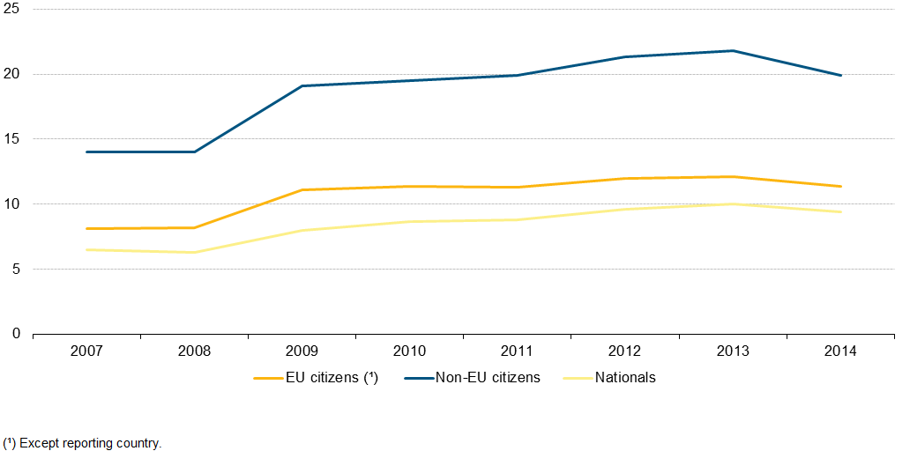

Mass immigration in Europe is a relatively new trend, with population of foreign born citizens in Spain and Germany increasing from 1% to 14.5% and 13% respectively in just 45 years time. All throughout Europe, immigrants are faced with various problems reaching from economic challenges to social disintegration and xenophobia. The devastating results of failed integration are evident in society, such as higher unemployment rates among immigrant populations in the EU ( 14,8% compared to 9,6% overall unemployment) and disadvantages to natives due to language constraints. This, as a consequence, leads to their children not being able to follow the school curricula, which then closes the vicious circle of having trouble finding work in the future.
Switzerland is no exception in trying to find ways of how to integrate immigrants appropriately, being a country where 24,3% of the population comes from abroad. While some measures, such as complementary language classes in schools and inclusion in sport activities, ensure the proper integration of children and adolescents, most immigrants struggle to become a part of the society they are living in, leading to them not interacting with the locals but rather staying secluded in their immigrant communities.
When tackling the topic of immigration, it is important to understand the difference between legal and illegal immigration. Legal immigration can be very useful for a country, seeing that foreigners often bring knowledge and skills not present in the country and relieve the problem of an aging society. In addition, immigrants who earn money in the country in question also pay taxes, thus creating an additional income for the country. While legal immigration has its advantages, illegal immigration can often involve criminals - which in return creates various legal problems, jeopardises a country’s security and affects the economy.
One of the main problems faced by immigrants is difficulty learning the local language, which creates a barrier between them and the local population and thus creates barriers from mixing up and fully integrating into the society they live in. On the other hand, locals are not always enthusiastic in welcoming and integrating strangers into their everyday life, lead by xenophobia and the fear of changing their ways of living. Locals often do not realize the benefits of integrating foreigners into the society and often consider them as an extra cost. This fear and lack of understanding is one of the factors leading to the increased popularity of right-wing parties, with the latter promoting nationalism and the importance of traditions.
Furthermore, different traditions and religions of immigrants often do not correlate with the traditions of the country, which often creates integration conflicts on a social and legislative level You can read more about it on Swissinfo.ch.
Another important issue are the language and culture difficulties immigrant children face in schools, leading to a higher unemployment rate in their adulthood. Even though extra funds are often allocated from the governments and the European Commission to schools to ensure proper integration, it is often insufficient and results in immigrants spending more time among each other instead of interacting with the locals.
Additionally, it is often unclear who should carry the responsibility of integrating new members of the society. It is often considered to be the job of the immigrants themselves to properly find their way around the structure and ways of the new system they live in. However, language constraints, again, can make this difficult.
Even though various national policies have been adopted in the recent years, they have been proven to be insufficient. Europe is in need of a generalised policy and clear guidelines on how to treat immigrants. On the other hand, attempts of creating such a policy have been found to be quite difficult, due to the different reasons for immigration.

Evolution of unemployment rates of the population (aged 20–64) by broad groups of country of citizenship, EU-28, 2007. Source: Eurostat
European integration fund: This fund, which was mainly focusing on newly arrived immigrants, disposed over a budget of EUR 825 million for the period 2007-2013.
Lisbon Treaty: The Lisbon Treaty, dated 2009, clarified some open questions concerning immigration, establishing a clear procedure for both legal and illegal immigrants and ensuring that both groups have the same rights. At the same time, the competence of the European Union in the matter of immigration has been clarified and declared to be a shared competence , which specifically concerns the number of immigrants a Member State needs to accept. In parallel, the Court of Justice was declared to have full competence in the field of immigration and asylum.
Global Approach to Migration and Mobility: this framework for the EU’s relations with third world countries was adopted by the Commission in 2011 and is based on four pillars: legal immigration and mobility, illegal immigration and trafficking in human beings, international protection and asylum policy and maximising the impact of migration and mobility on development. With bilateral dialogue being one of the most important focus points, so called “mobility partnerships” represent one of the most frequently used instruments.
Strategic guidelines within the area of freedom, security and justice’ of June 2014: these guidelines, called ‘strategic guidelines for legislative and operational planning within the area of freedom, security and justice’ are valid for the period 2014-2020. They focus on the transposition, implementation and consolidation of measures already in place.
National integration programs: In addition, most European countries have put into force a national integration program. For example, Sweden’s program, which is considered to be the best in Europe, includes elements such as: 1) voluntary participation in all the activities concentrated on immigration; 2) the employment-oriented nature of the introduction programme; 3) decentralisation in Swedish integration policies; 4) easy access to the Swedish nationality.
Immigrant: According to the Oxford Dictionary, the word “Immigrant” is defined as “A person who comes to live permanently in a foreign country”. Failure to understand the difference between a labour immigrant, a refugee and an illegal immigrant seems to lead to lead to further misunderstandings. Complementary, different understanding of whether children of immigrants should also be considered as such or not make an exact definition even more difficult. This has especially been a topic in the recent years, with the second generation of former immigrants growing up and trying to find their way around the country which they should call their home while still holding on to their roots.
Mobility partnerships: bilateral agreements to share the responsibility and management of circular migration.
Legal and illegal immigration: while legal immigrants have notified the government of their entrance to the country and have asked for an appropriate visa, illegal immigrants hide themselves from the law. The government does not now these people reside in the country.
EU blue card: ‘EU blue card’ is simple way of being able to work within the EU. It was created mainly to motivate highly qualified third-country workers to move to the European Union.
The Single Permit Directive (2011/98/EU) sets out a common, simplified procedure for third-country nationals applying for a residence and work permit in a Member State, as well as a common set of rights to be granted to regular immigrants.
The European Parliament - supports the introduction of a European immigration policy. The European Parliament, together with the Council of the EU, decides on measures ensuring legal immigration and urges the importance of building integration, immigration and asylum policies on “full respect for fundamental rights”. As one of the legislative powers of the European Union, the European Parliament is actively involved in the adoption of new laws, such as ones concerning immigration.
Member States - Member States want to maintain their sovereignty and their traditions, while ensuring peaceful communication between the different members of the society and reducing unemployment rates among immigrants.
International Organization for Migration (IOM) - The International Organization for Migration is a supranational organization which works with governments as well as other partners in the field of migration. It acts with its partners in the international community to: 1) assist in meeting the growing operational challenges of migration management; 2) advance understanding of migration issues; 3) encourage social and economic development through migration; 4) uphold the human dignity and well-being of migrants. The IOM contributes to these goals by providing services and advice to governments and migrants.
MPI Europe: The future of immigrant integration in europe: Mainstreaming approaches for inclusion.
Here, you will learn more about the strategy of “mainstreaming” integration in Europe, meaning that all immigrants will have equal rules and policies will apply to everybody.
International Labour Organization: The Labour Market Integration of New Immigrants in Europe: Analysis and Policy Evaluation:
http://www.ilo.org/global/topics/labour-migration/projects/WCMS_357742/lang–en/index.htm
A project aiming to find out how well immigrants are integrated in the labour market.
Migrant immigration statistics - employment:
[http://ec.europa.eu/eurostat/statistics-explained/index.php/Migrant_integration_statistics_-employment](http://ec.europa.eu/eurostat/statistics-explained/index.php/Migrant_integration_statistics-_employment)
Here you can learn more about the employment rates of immigrants in various EU-countries.
http://www.oecd.org/els/mig/Indicators-of-Immigrant-Integration-2015.pdf
This publication contains a large overview on the outcomes of immigrants and their children across all EU and OECD countries.
Migrant Integration Policy Index: International key findings:
http://www.mipex.eu/key-findings
The Migrant Integration Policy Index (MIPEX) is a unique tool which measures policies to integrate migrants in all EU Member States, Australia, Canada, Iceland, Japan, South Korea, New Zealand, Norway, Switzerland, Turkey and the USA.
A common immigration policy for Europe: http://eur-lex.europa.eu/legal-content/EN/TXT/?uri=URISERV%3Ajl0001
Immigration policy:
http://www.europarl.europa.eu/atyourservice/en/displayFtu.html?ftuId=FTU_5.12.3.html
On a common immigration policy:
Treaty of Lisbon:
http://eur-lex.europa.eu/legal-content/EN/TXT/?uri=celex%3A12007L%2FTXT
The Integration of Immigrants in Sweden: a Model for the European Union?
http://archives.cerium.ca/IMG/pdf/72-immigration-wiesbreck.pdf
EU-competences:
http://ec.europa.eu/citizens-initiative/public/competences/faq
Mobility partnerships, visa facilitation and readmission agreements:
Coming to the EU? (Blue card):
http://ec.europa.eu/immigration/who-does-what/what-does-the-eu-do/coming-to-the-eu_en
Directive 2011/98/EU of the European Parliament and of the Council:
http://eur-lex.europa.eu/legal-content/EN/ALL/?uri=CELEX:32011L0098
International Organization for Migration:
http://www.geneve-int.ch/international-organization-migration-iom-0
What is the European Parliament?:
http://europa.eu/about-eu/institutions-bodies/european-parliament/index_en.htm
EU news on immigration:
http://www.europarl.europa.eu/news/en/news-room/topic/645